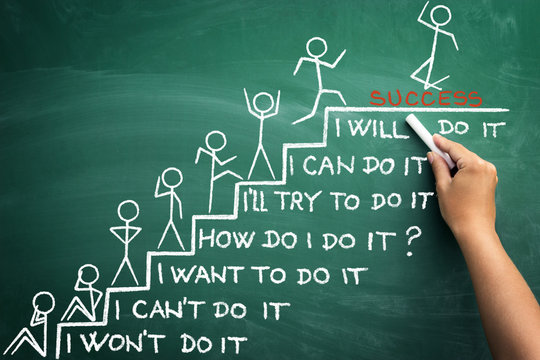

My main motivation for taking interest in the field has to do with the satisfaction that I get from making things work, as well as learning something new and applying it to real life. Frankly, it took me quite some time to figure out exactly what sort of IT field I would like to work with. I tried to get into all kinds of things, such as coding, UX/UI design and so on. However, it was only system administration that stuck with me, as it provided me with a (relatively) clear structure to follow, as well as copious amounts of information to learn to be able to understand how networks and PCs work. I also figured that since I used to work part-time as an English tutor, I learnt how to communicate my knowledge with clarity. This definitely contributed to the development of my soft skills and should help me in the future.
